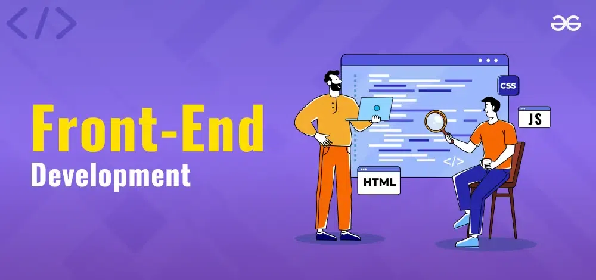
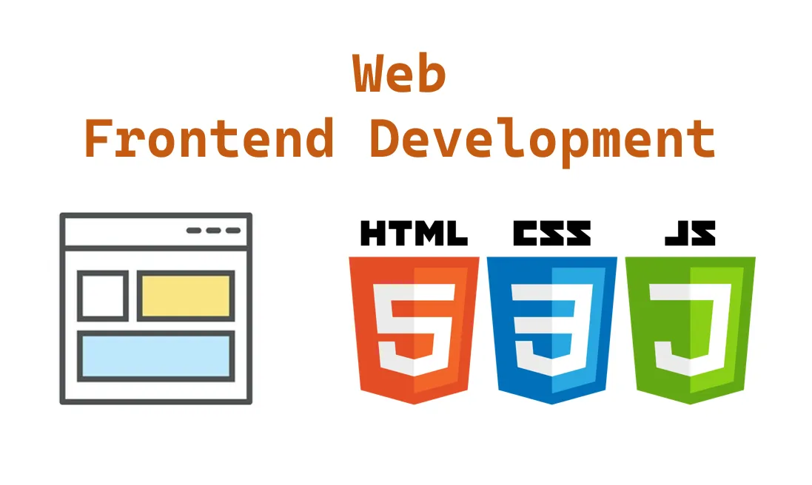
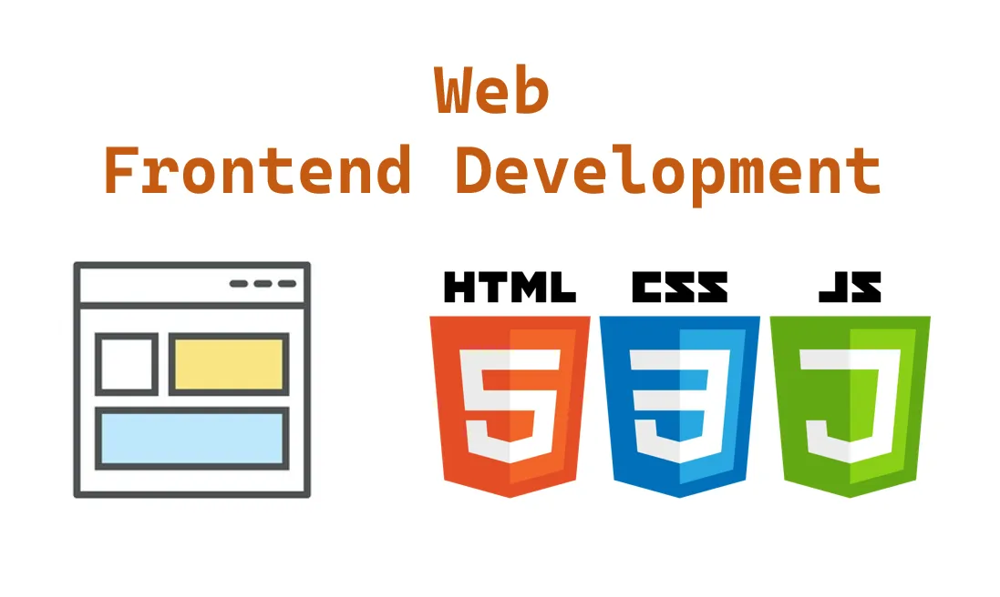

Frontend Development
Frontend Development Service
What is fontend and what does it do?
Frontend development is the part of a website that users see and
interact with. It includes everything you see on a webpage, like
text, images, buttons, and animations. Frontend developers use languages
like HTML for structure, CSS for styling, and JavaScript for interactivity to
create visually appealing and user-friendly websites.
The frontend ensures that a website looks good and works smoothly on different
devices like computers, tablets, and phones. It handles things like navigation
menus, forms, and animations, making sure users have a great experience.
A well-designed frontend helps make a website easy to use and visually engaging.
I specialize in creating responsive and interactive frontend designs using
HTML, CSS, and JavaScript. Whether you need a static website or a dynamic user
interface, I ensure smooth and visually appealing designs.
How We Work?
To ensure the best results for your project, I follow a structured and transparent workflow. Here’s how we collaborate to bring your vision to life:
1. Initial Discussion & Requirement Gathering
- A rough wireframe or design mockup (Figma, Adobe XD, or even a hand-drawn sketch) to outline the layout.
- Any brand guidelines such as logos, fonts, and color schemes to maintain consistency.
- A list of core functionalities you want, such as interactive elements, animations, or third-party integrations.
- Any reference websites that inspire your project’s look and feel.
2. Planning & Strategy
- Break down the project into milestones and provide a timeline.
- Choose the best technologies and frameworks based on your requirements.
- Create a basic prototype or a static preview (if needed) before proceeding with full development.
3. Design & Development
- Convert the wireframe/mockup into a fully responsive and interactive UI.
- Implement animations, transitions, and micro-interactions for a smooth user experience.
- Optimize the design for mobile and tablet users.
- Integrate any necessary APIs, forms, or interactive elements.
4. Testing & Debugging
- Perform cross-browser testing to ensure compatibility with Chrome, Firefox, Edge, and Safari.
- Conduct mobile responsiveness checks to guarantee a seamless experience on all screen sizes.
- Test functional components like buttons, forms, navigation, and interactive features.
- Fix any bugs or performance issues before final deployment.
5. Client Review & Revisions
- Provide a preview of the project for your review.
- Make necessary modifications or improvements based on your feedback.
- Conduct a final quality check before going live.
6. Deployment & Delivery
- Deploy the website or application to your server or hosting platform.
- Set up SEO optimizations, caching, and performance enhancements.
- Ensure everything is secure, fast, and fully functional.
7. Post-Launch Support
- Offer minor fixes and adjustments for a specific period after launch.
- Provide documentation or guidance on managing content and future updates.
- Available for future upgrades, maintenance, and additional features if needed.
With this structured approach, I ensure a smooth, transparent, and high-quality development process that meets your expectations! 🚀
Tools Used
HTML
CSS
JavaScript
React
Bootstrap
how it Works
 

Contact Me
Back to Home